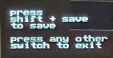
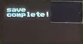

Settings
To navigate to the Settings View, hold the Shift switch and press the Sequencer switch.
The Settings View allows for the configuration of global and preset-specific settings. From here, you can control the processing of MIDI messages, set patch-specific controls, initialize a preset, and enable the Oscilloscope.
This section describes the different settings in the Settings menu and how to control them. For this section it is assumed that you are in the settings menu.
List of Parametric Settings
This table contains the settings within the settings menu, a short description, the default value, and whether the parameter is Global (affects all presets) or Preset Specific.
Links are included to sections with more in-depth descriptions.
| Setting | Description | Default value | Global or Preset Specific |
|---|---|---|---|
| Preset Number | Select the preset number that will be loaded or saved to | 1 | Global |
| Preset Name | Where the preset name is displayed and edited | The name of Preset 1 | Global |
| Channel | Selects the MIDI channel that Iosefka will receive messages from.* | 1 | Global |
| Src: | Select the MIDI Modulation source here to select the Modulation Destination setting below will affect.** | Velo | Preset |
| Mod Destination | Select the Modulation Destination that the Modulation Source above affects** | None | Preset |
| Legato | Toggles Legato on/off. With legato on, envelopes are not retriggered when new notes are pressed | On | Preset |
| Osc Duo | Toggles Osc Duo on/off. This is a paraphonic mode, giving the ability to play a separate note with each oscillator | Off | Preset |
| VCA Velo | Toggles VCA Velocity on/off. Turning this setting off decouples the Velocity Mod Source from the VCA, so any entered notes will always be at full Velocity | On | Preset |
| Clock RX | Toggles MIDI Clock Receive on/off. With this setting off, Iosefka will ignore external clock messages and run only on the internal sequencer clock* | On | Global |
| Trnsprt RX | Toggles MIDI Transport messages on/off. With this setting off, Iosefka will ignore external Play and Stop MIDI messages* | On | Global |
| Pgm Chg RX | Toggles MIDI Program Change Receive on/off. With this setting off, Iosefka will ignore external Program Change messages* | On | Global |
| Latch | Toggles Parameter Latch on/off. With Latch enabled, Parameters will not change until the corresponding Potentiometer is near the parameter value. This prevents a parameter from 'jumping' to a value drastically different than the current value | Off | Global |
| P.B. Dpth | Selects the Pitch Bend Depth in musical semitones. The value set will be +/- this number. For example, a setting of '1' means that the pitch bend will be +1 and -1 semitones at the extremes | 1 | Global |
| Scope | Switches OLED Display to Oscilloscope | N/A | N/A |
| Init (Shift) | When shift is held, this setting initializes the preset to the 'factory' default. This is the default preset for all presets. | N/A | Preset |
* More information can be found in the MIDI Implementation section ** A list of Mod Destinations can be found in the Modulation Destinations section
Using the Settings menu
When first visiting the Settings menu after starting up the machine, the Data rotary encoder is in the Settings Scroll Mode which controls scrolling through the Settings menu items, indicated by the circle icon on the left of the OLED Display. Pressing down on the Data rotary encoder switch, does different things depending on the setting:
- For settings with numbers or text to the right, the Data rotary encoder now switches Modes and increments/decrements the value of the setting. Horizontal parallel lines will appear above and below the setting name to indicate that the setting is being edited.
- To return to the Settings Scroll Mode, click the Data rotary encoder switch again.
- For settings related to Presets, and settings related to Mod Source/Destination, the horizontal lines will encompass two lines, indicating that those settings are related. The selected setting is indicated by the circle icon on the left.
- For settings with square checkboxes, the Data rotary encoder switch will toggle that item on and off.
- Some Settings menu items such as the Preset Name entry, enabling the Oscilloscope, and Initializing a Preset have slightly different control types. Those will be explained in their own sections.
To minimize redundancy, in the rest of the Settings section, the term "scroll to and select" will be used to describe scrolling to the menu item while in Settings Scroll Mode and selecting the setting using the Data rotary encoder switch.
Presets
Iosefka contains 64 presets which allow for the saving of every machine Parameter, including sequencer Parameters and steps.
Selecting a preset
To save or load a preset of your choice, scroll to and select "preset" or press the Preset Key Switch which enables the Preset Mode ("preset" will be outlined as in the picture below), and turn the Data rotary encoder to the preset number of your choosing.
The currently loaded preset is indicated by a ">>" next to the name "preset".
Note that the preset number is in decimal not hexadecimal.
Saving a Preset
With the preset number that you wish to save selected, ready the save state of the machine by pressing the Save Key switch. This brings up the following screen on the OLED Display.

If you are certain that you are ready to save, execute the save by holding the Shift switch and pressing the Save Key switch again. The machine confirms that the preset has been saved with this screen.

Loading a Preset
With the preset number that you wish to load selected, ready the load state of the machine by pressing the Load Key switch. This brings up the Load screen on the OLED Display (same screen in as Saving a Preset, but 'save' is replaced with 'load').
If you are certain that you are ready to load, execute the load by holding the Shift switch and pressing the Load Key switch again. The machine confirms that the preset has been loaded with this screen.
Editing the Preset name
Each preset can have an 8 character name which is loaded on startup and can be seen when selecting a preset.
Navigate to and select the row beneath "preset". This row will be blank if no preset name has been entered. A highlighted square will appear, and you can select the alphanumeric character with the Data rotary encoder. For ease of use, only lowercase letters, numbers, and "." "-" characters will appear.
To move to the next character, hold the Shift Switch and turn the Data rotary encoder. Do this multiple times to scan through multiple characters. To save the Preset name, you must save the Preset.